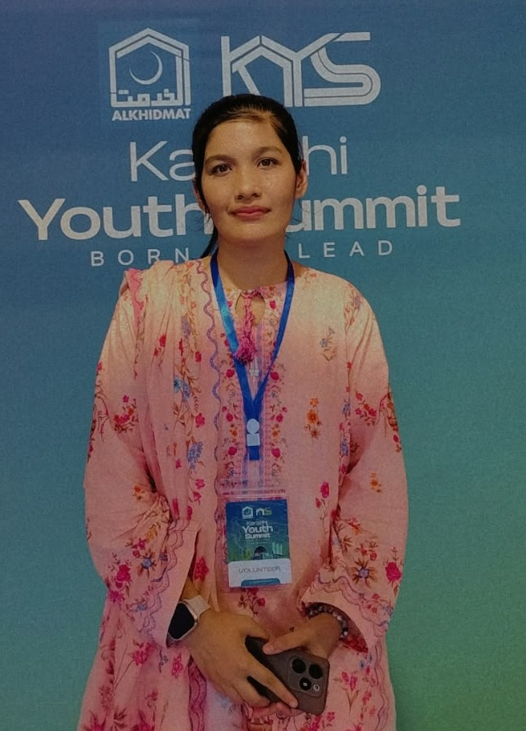
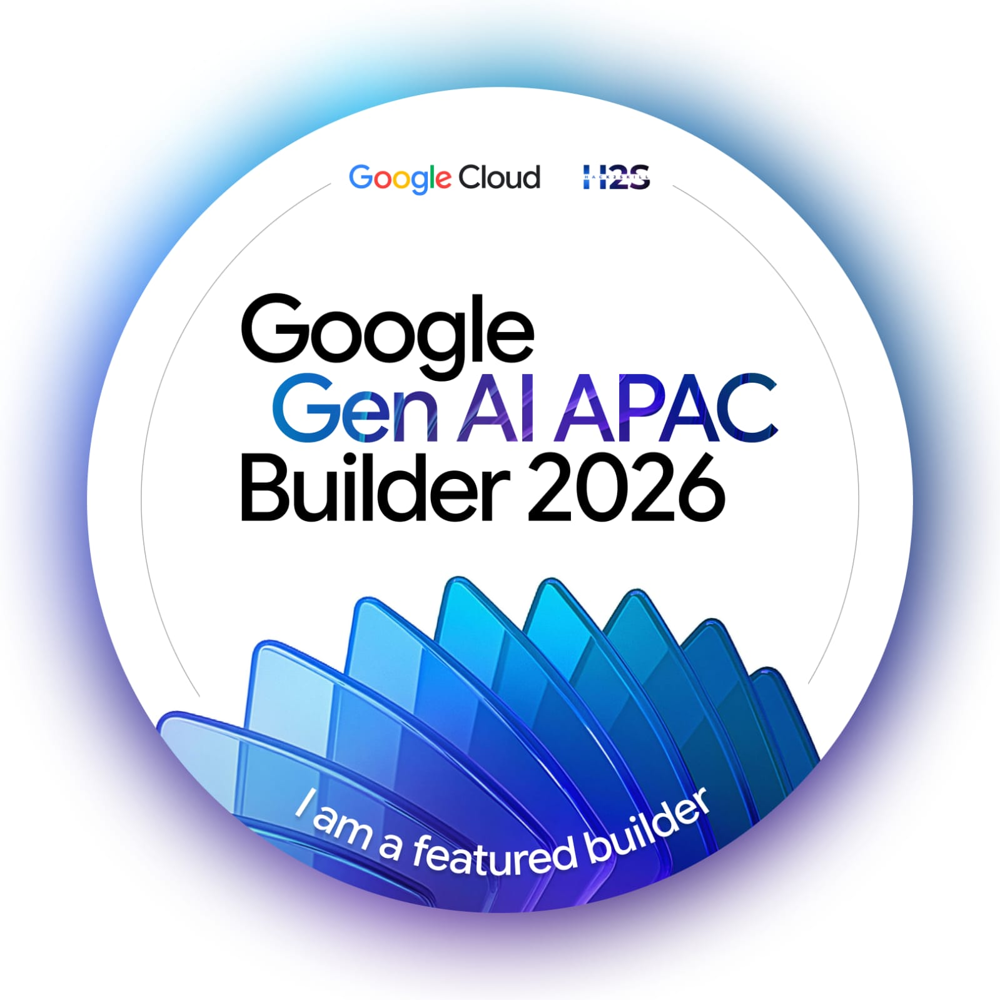

CYBERSECURITY · CLOUD · AI
Hi, I'm Fatima Saleem.
Build with purpose.
Secure by design.
Cybersecurity undergraduate, Microsoft Student Ambassador and aspiring Cloud Security Engineer. I build security-focused software and explore how AI can solve real-world challenges.

Karachi, Pakistan · DUET
01 / ABOUT
A builder's curiosity.
A defender's mindset.
I am pursuing a BS in Cybersecurity at Dawood University of Engineering and Technology. My interests span network defence, secure software, cloud infrastructure and AI-enabled applications.
From packet analysis and secure code review to hackathon prototypes, I learn by building. Through student ambassador programmes and community events, I also enjoy connecting people with technology.
My goal is to become a Cloud Security Engineer and contribute to secure, accessible and impactful systems.
02 / CAPABILITIES
My technical toolkit.
Practical experience, foundations and areas I am actively developing.
03 / SELECTED WORK
Ideas turned into applications.
Explore my live prototypes and hands-on cybersecurity work.
04 / CREDENTIALS
Learning beyond the classroom.

FEATURED RECOGNITION
Google Gen AI APAC Builder 2026
Recognized as a featured builder through the Google Cloud and Hack2skill programme.
05 / JOURNEY
Experience, leadership & education.
EDUCATION
BS Cybersecurity
Dawood University of Engineering and Technology
Sep 2025 – Sep 2029 · CGPA 3.32/4.00
Intermediate
Shamsi Society Higher Secondary Girls College
Aug 2023 – Aug 2025 · Grade A
STEAM Exhibition participant
NEXT HORIZON
Cloud security engineering
Currently pursuing Google Cybersecurity training and developing my foundations in secure cloud infrastructure.
06 / OPEN SOURCE
From my GitHub.
@fatimasaleem2208
View profile ↗Loading public repositories…
07 / INTERACTIVE LAB
Meet me in the terminal.
A simulated portfolio shell. Try a command to explore my work.
08 / CONTACT
Let's build something secure.
Interested in cybersecurity, cloud security, AI projects, internships or technical collaboration? I'd love to connect.